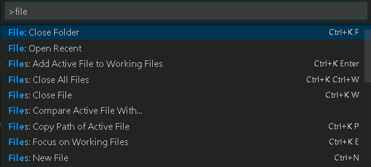
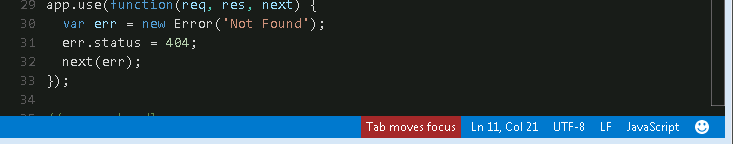

Visual Studio Code にはすべてのユーザーが使い勝手の良いエディタを作るための機能が多く備わっています。ズームとハイコントラストの色はエディタの可視性を向上させ、キーボードナビゲーションはマウスなしで使用でき、エディタはスクリーンリーダー用に最適化されています。
ズーム
VS Code はエディタのズームレベルを変更可能です。表示 > 拡大 か (⌘= (Windows, Linux Ctrl+=)) でズームレベルを上昇します。ズームレベルを低下する場合は 表示 > 縮小 か (⌘- (Windows, Linux Ctrl+-)) を試してください。
なおこれらの操作の場合には、レベルが20%ずつ変化します。
ズームレベルの固定
表示 > 拡大/縮小 でズームレベルを調整した場合は、window.zoomLevel settingで値を保持します。このときのデフォルト値は0です。
ハイコントラストテーマ
ハイコントラストテーマはすべてのプラットフォーム上でサポートしています。配色テーマを変更するには、 ファイル > 基本設定 > 配色テーマで配色テーマの選択を表示したらHigh Contrastを選択してください。
キーボードナビゲーション
VS Code はマウスを使わずに操作できるように コマンドパレット (⇧⌘P (Windows, Linux Ctrl+Shift+P)) でコマンドの完全なリストを提供しています。また、コマンドパレットを開いて例えば git と入力したならそれに基づいたフィルターを適用します。
コマンド用のプリセットキーボードショートカットも沢山用意しています。これらはコマンドパレットの右側に表示されます。

独自のキーボードショートカットも設定可能です。キーボードショートカット(ファイル > 基本設定 > キーボードショートカット)は、左側に既定のショートカット 右側にカスタマイズ可能な keybindings.json を表示します。詳細については Key Bindingsを確認してください。
タブナビゲーション
Tabを使って UI を移動することができます。Shift+Tab で逆順に移動することも可能です。この移動の場合は要素がフォーカスしたとき、UIの周りにインジケーターを表示します。
タブナビゲーションをサポートする場所は次の通りです:
- アクティビティーバー (Files, Search, Git, Debug)
- 折りたたみ可能なセクションのヘッダー
- ビューとセクション
- エクスプローラーのツリーアイテム
タブトラッピング (タブを捕らえる)
既定の設定では、ソースコードファイル内で Tab を押すとタブ文字(インデント設定に応じてスペース)が挿入され、開いているファイルから(今度は)離れません。 ⌃⇧M (Windows, Linux Ctrl+M) で Tab のトラッピング機能を切り替えたら Tab でファイルからフォーカスを外すことができます。もし Tab トラッピングがオフなら、ステータスバーにインジケーターを表示します。

Toggle Use of Tab Key for Setting Focus (日本語訳が不明)を実行することで コマンドパレット (⇧⌘P (Windows, Linux Ctrl+Shift+P))からも Tab トラッピングを切り替えることができます。
読み取り専用ファイルではTabキーを捉えることはありません。統合端末 は Tab トラップモードを使えるよう⌃⇧M (Windows, Linux Ctrl+M)で切り替えることができます。
スクリーンリーダー
VS Code は、テキストをページング方式に基づく方法を使用してスクリーンリーダーをサポートしています。私たちは NVDA screen reader を使ってテストしていますが、すべてのスクリーンリーダーで機能すると考えています。
次/前のエラーまたは警告へ移動 (F8 /⇧F8 (Windows, Linux Shift+F8)) をしたときスクリーンリーダーはエラーと警告のメッセージを読み上げます。
また、提案がポップアップしたときも読み上げてくれます。このとき提案を Alt+Up と Alt+Down で使って移動するか Shift+Escape で提案を却下することもできます。もし、この自動のポップアップ表示無効化したいときは editor.quickSuggestions で設定してください。
アクセシビリティのヘルプ
⌥F1 (Windows, Linux Alt+F1) を押すと アクセシビリティのヘルプダイアログを表示して、様々な状態を確認できます。

デバッガーのアクセシビリティ
デバッガーのアクセシビリティには以下の機能があります:
- デバッグステータス(例えば 開始,ブレークポイント, 終了など)の変更表示。
- すべてのデバッグアクションへキーボードからの操作。
- デバッグ表示とデバッグコンソールの両方でタブナビゲーションをサポート。
- デバッグホバーにキーボードから操作(⌘K ⌘I (Windows, Linux Ctrl+K Ctrl+I))。
既知の問題
VS Code には、プラットフォームに応じていくつかの既知の問題があります。
Windows
矢印キーを利用してメニューバーのアイテム間を移動することができません。これはElectronの問題#2504によるものです。
Mac
VoiceOver を使用したエディタのスクリーンリーダーは限られます。
Linux
スクリーンリーダのサポートはありません。
次のステップ
次を見てください:
- Visual Studio Code Basics - VS Code に素早く適応
- Editing Evolved - コードの色付けやマルチカーソルから IntelliSence まで